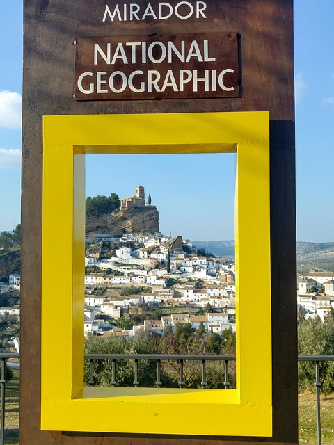

Montefrío es un municipio y localidad española situada en la parte septentrional de la comarca de Loja, en la provincia de Granada, comunidad autónoma de Andalucía. Limita con los municipios granadinos de Íllora, Villanueva Mesía, Loja y Algarinejo; con los municipios cordobeses de Priego de Córdoba y Almedinilla; y con el jienense de Alcalá la Real. Cuenta con una población de 5283 habitantes (INE 2025). Por su término discurre el río Turca.El municipio montefrieño es una de las dieciséis entidades que componen el Poniente Granadino, y comprende los núcleos de población de Montefrío —capital municipal—, Milanos, Los Molinos, La Viñuela, Lojilla, Córcoles, Campo Humano, Fortaleza, Los Gitanos, Los Hospitales, Rincón de Turca y Baratas. Está ubicado en las estribaciones de la sierra de Parapanda.Montefrío fue declarado conjunto histórico-artístico Nacional en 1982. En octubre de 2015 fue considerado por la revista National Geographic como uno de los diez pueblos con mejores vistas de todo el mundo.
